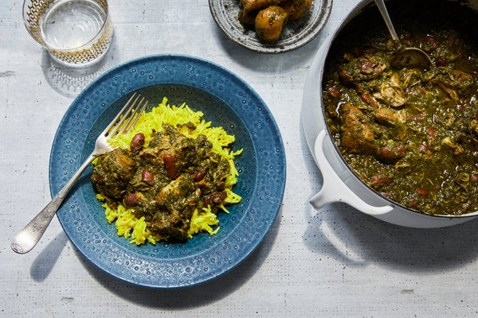

Iranian Eats
Ghormeh Saabzi

There are three essential elements to this khoresh, or stew, which is often called Iran's national dish. First, the sweet, pungent flavor of dried or fresh fenugreek leaves defines the stew, which simply isn't the same without it. Likewise, Omani limes (also known as dried Persian limes) add a distinct aged sourness that is vital to the dish. Finally, the classic Persian technique of sautéing a mountain of finely minced herbs lends character and complexity to the foundation of the stew. Don't be afraid to really cook down the herbs until quite dark and dry; this step is essential to concentrate their flavor.
Ingredients
- 1 1/2 lbs lamb shoulder
- 1 tsp ground turmeric
- salt and pepper
- 1/2 cup dried kidney beans
- 3 tbsp extra virgin olive oil
- 1 diced yellow onion
- 1 lb italian parsley
- 1 lb cilantro
- 2 bunches chives
- 1 bunch scallions
- 1 tbsp dried fenugreek leaves
- 4 persian limes
- 1/4 tsp crumbled saffron threads
Directions
- In a medium bowl, season the meat with turmeric, 2 teaspoons salt and ½ teaspoon pepper. Set aside.
- Rinse the beans and place in a medium bowl with 1 cup water and a generous pinch of salt. Set aside to soak for 30 minutes.
- In the meantime, place a large Dutch oven or similar pot over medium-high heat. Add 3 tablespoons oil. When it shimmers, add meat and cook, turning regularly so that it browns evenly on all sides, about 15 minutes. Once the meat has browned, move it to the edges of the pot and add the onion to the center of the pot, along with a generous pinch of salt. Cook, stirring regularly, until the onion begins to soften and turn brown, 8 to 10 minutes.
- Drain the beans and add to the pot, stirring to combine everything and coat the beans with oil. Add 4 cups water, increase heat to high and bring to a boil. Reduce heat to medium-low, cover pot and simmer for 2 hours.
- In the meantime, prepare the herbs: Wash parsley and cilantro, then use a salad spinner to dry very well. Remove and discard the tough stems. Chop the leaves and tender stems very, very finely, or feel free to use a food processor to get these herbs as finely chopped as possible. The more finely chopped the herbs, the more green and unctuous the ghormeh sabzi will be.
- Separately chop the chives and entire bunch of scallions (including the green tops) as finely as possible by hand. These, too, must be very finely chopped — nearly minced — but they will turn to mush in a food processor and thus should be chopped by hand.
- Set a large frying pan over medium heat. When the pan is hot, add the remaining ¼ cup oil and the scallion-chive mixture. Allow to wilt, stirring constantly, for about 2 minutes, then add remaining chopped herbs and fenugreek leaves, crushing the fenugreek leaves between your fingers as you add them. Cook, stirring continuously, until the herbs are wilted and very dark green — but not burned — and they give off a bright green oil when pressed with a spoon, 18 to 20 minutes. This step is crucial to the flavor and color of the stew. You'll know the herbs are ready when they feel dry and emit a strong, savory aroma.
- When the meat has cooked for 2 hours, add the cooked herb mixture, Omani limes and ½ cup water. Season with salt and bring to a boil. Reduce heat, cover pot, and simmer for another hour. Check on the limes occasionally to make sure they are submerged in the stew but not falling apart. Gently push them into the stew if they're still floating after 20 minutes.
- As the stew nears the 3-hour mark, remove the lid and check the meat; it should be very tender. If the ghormeh sabzi seems a little watery, leave it uncovered for the last 20 minutes of cooking and allow to reduce into a thick stew. Taste and adjust the seasoning with salt and pepper. If the stew needs a little acidity, juice a lime into the stew through a sieve by pressing down on it with a spoon (avoid letting the seeds through the sieve, as they can be bitter). Set aside. Taste the stew and continue adding more lime juice until the stew is sufficiently tangy. Stir in the saffron. The stew should be a very deep, dark shade of green and quite thick when done. Return dried limes into the stew to serve.
- Serve hot with Persian rice and mast-o khiar.